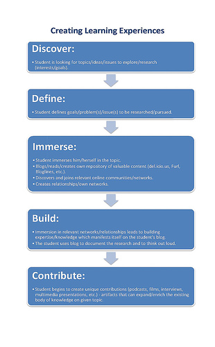

Providing students with a series of steps to follow as they conduct their research and work with information provides an important scaffold for students as they solve their information problems.
It also allows them to think about thinking: to think about what they know and what they don’t know giving them the abiity to plan, implement, and evaluate strategic approaches to learning and problem solving.
Most students lack cognitive skill and awareness. An information problem-solving model allows them to engage in metacognitive activities such as self-questioning, reflection, and strategy revision. When students employ such a tool they are much better able to transfer skills they have acquired to other situations. (Kuhlthau ).
When a classroom teacher, school or even school division incorporates an information processing model into their resource-based learning program students and teachers have a common language to describe the learning process in which they are engaged.
A number of models are examined in detail at Information Age Inquiry and at Information Literacy Models and Inquiry Models
Each model offers the following:
As you explore the models consider the following statement:
Although you can follow a model that someone else developed, it makes sense to adapt these to fit your own teaching and learning style. Students can develop their own model as they reflect on their inquiry. As you explore each model, create a list of those elements that you like the best in each.
New Models:

The Information Studies K-12 document from the Ontario School Library Association states that students learn best when schools adopt a consistent inquiry and research model across all grades and disciplines and from grade to grade. The OSLA has studied the wide range of literature and research in the field of information science and information studies, and has identified four stages which are common to all models:
Once a problem-solving model has been selected the individual skills within each stage or strand can be determined setting specific objectives for each grade level and subject area and thus making it easy for teachers to know what skills they have to address within their classrooms. However, in a rapidly expanding and changing information environment this is not a simple task .